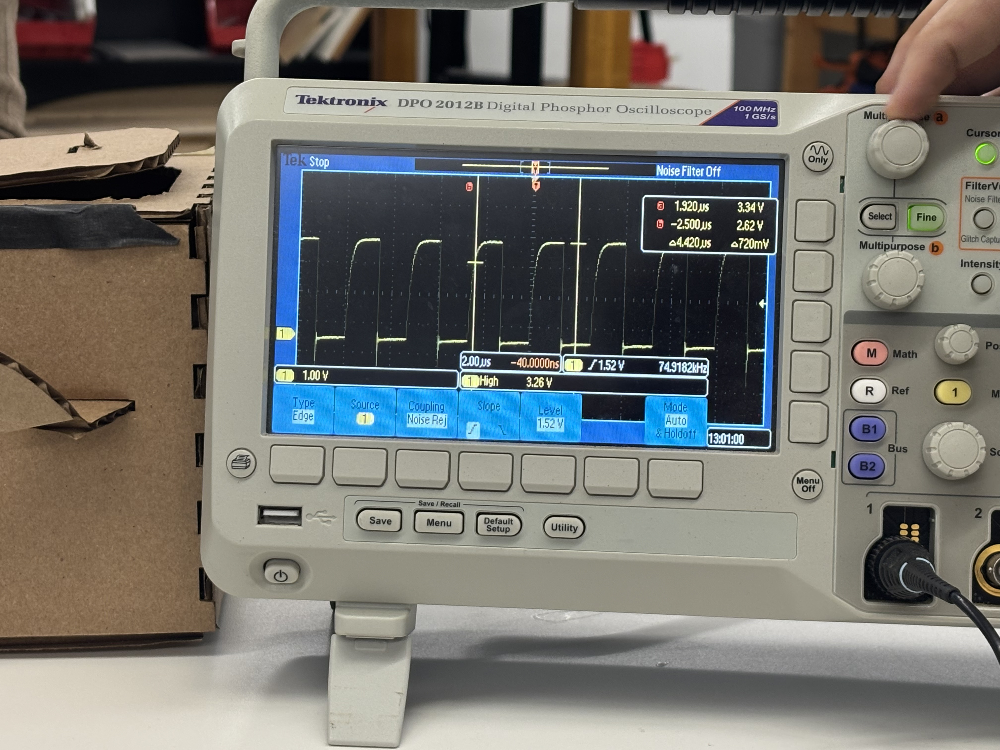

<div class="textcontainer">
<p class="margin"> </p>
<h4>Week 7: Electronic Outputs</h4>
<h2><b><i><u>MVP: Prototype Card Shuffler + electronics</h2></u></i></b></h3>
<p class="margin"> </p>
<h4> So for my MVP, I really wanted to master the shuffler function I had in my 3d printing assignment. It was a crucial part of the project, and after a bunch of laser cutting, I was able to get the right dimensions. However, the cards also kept getting stuck and the protoype wasn't the best, mainly because the wheels were too big. For my next iteration, I know what to change to make the cards flow smoother. </h4>
<video width="200" height="300" controls>
<source src="shuffling.mp4" type="video/mp4"> </video>
<p class="margin"> </p>
<img src="still.jpg" alt="Flowers in Chania" width = 200; </img>
<p class="margin"> </p>
<h6><b><a download href='./cardworker.dxf'>Download the dxf file here </a></b></h6>
<p class="margin"> </p>
<h4> Next, I want to try implementing a box as a "collector pile." That way, I can use another motor to fling out cards at each player. For my final project, I now know to the fucntion necessary to fully shuffle the cards, especially poker ones.
<p class="margin"> </p>
<h2><b><i><u>OLED Screen</h2></u></i></b></h3>
<h4> I wanted to implement a screen that allows you to choose between whether you want to distribute cards or shuffle them. Since I haven't implemented my distribution function yet, I decided to just have a shuffle feature. When its idle, it says <b> Shuffle? </b> When its shuffling, it says <b>shuffling...</b> with an animation, and when it's done, it says <b> done! </b>
I also wanted to implement a progress bar of LEDs, which I got to work at some point. Unfortunatly, the LED broke and I was unable to fix it due to time issues. Essentially, as you pressed down on the button, the LED strip would slowly light up from left to right while calibrated for the average time necessary to shuffle a deck of cards. </h4>
<p class="margin"> </p>
<video width="200" height="300" controls>
<source src="electronics.mp4" type="video/mp4"> </video>
<p class="margin"> </p>
<h2><b><i><u>Code with class structure</h2></u></i></b></h3>
For my code, I used the millis function for the dot animation on the OLED. I also used it for my LEDs to light them up one-by-one, but lost the code for that. I used a function for the text displayed on the screen to reduce redundancy.
<p class="margin"> </p>
<pre><code class="language-arduino">//
#include <Wire.h>
#include <Adafruit_GFX.h>
#include <Adafruit_SSD1306.h>
#include <Adafruit_NeoPixel.h>
#define LED_PIN 22
#define NUMPIXELS 8
Adafruit_NeoPixel strip(NUMPIXELS, LED_PIN, NEO_GRB + NEO_KHZ800);
int BUTTON_PIN = 15;
int A1A = 12;
int A1B = 14;
int AA1A = 18;
int AA1B = 19;
int STATE_WAITING = 0;
int STATE_SHUFFLING = 1;
int STATE_DONE = 2;
int state = STATE_WAITING;
Adafruit_SSD1306 display(128, 64, &Wire, -1);
// helper to show a message
void showMessage(String message) {
display.clearDisplay();
display.setTextSize(2);
display.setTextColor(WHITE);
display.setCursor(16, 24);
display.println(message);
display.display();
}
void showSmallerMessage(String message, String small) {
display.clearDisplay();
display.setTextSize(1);
display.setTextColor(WHITE);
display.setCursor(0, 5);
display.println(small);
display.setTextSize(2);
display.setTextColor(WHITE);
display.setCursor(16, 24);
display.println(message);
display.display();
}
void setup() {
pinMode(BUTTON_PIN, INPUT_PULLUP);
pinMode(A1A, OUTPUT);
pinMode(A1B, OUTPUT);
pinMode(AA1A, OUTPUT);
pinMode(AA1B, OUTPUT);
digitalWrite(A1A, LOW); // start with the motors off
digitalWrite(A1B, LOW);
digitalWrite(AA1A, LOW); // start with the motors off
digitalWrite(AA1B, LOW);
display.begin(SSD1306_SWITCHCAPVCC, 0x3C);
showSmallerMessage ("Shuffle?", "Click button to start");
}
void loop() {
static unsigned long lastUpdate = 0; // time of last dot change
static int dots = 0; // number of dots in animation
bool buttonPressed = (digitalRead(BUTTON_PIN) == LOW);
if (buttonPressed) {
if (state != STATE_SHUFFLING) {
digitalWrite(A1A, HIGH);
digitalWrite(A1B, LOW);
digitalWrite(AA1A, HIGH);
digitalWrite(AA1B, LOW);
state = STATE_SHUFFLING;
dots = 0; // reset dots
lastUpdate = millis();
for (int i = 0; i < NUMPIXELS; i++) {
strip.setPixelColor(i, strip.Color(0, 150, 0));
strip.show(); // Green
}
}
// update the dots every 300ms
if (millis() - lastUpdate > 300) {
lastUpdate = millis();
dots = (dots + 1) % 4; // cycle 0–3 dots
display.clearDisplay();
display.setTextSize(1.5);
display.setTextColor(WHITE);
display.setCursor(18, 24);
display.print("Shuffling");
for (int i = 0; i < dots; i++) {
display.print(".");
}
display.display();
}
} else {
if (state == STATE_SHUFFLING) {
digitalWrite(A1A, LOW); // setting both pins LOW stops the motor
digitalWrite(A1B, LOW);
digitalWrite(AA1A, LOW); // setting both pins LOW stops the motor
digitalWrite(AA1B, LOW);
state = STATE_DONE;
showMessage("Done!");
delay(1000); // show "Done!" for 1 second
showMessage("Shuffle?");
showSmallerMessage ("Shuffle?", "Click button to start");
state = STATE_WAITING;
strip.clear();
strip.show();
}
}
}
</code></pre>
<h2><b><i><u>Oscillometer</h2></u></i></b></h3>
Thanks to some help from Bobby, we were able to find the clock. At first, we had trouble with oscillometer showing no changes, and then we realized it was because the oled screen needed to run in order to generate waves. The pulse takes about 1 microsecond according to the machine. </h3>
<p class="margin"> </p>

</div>